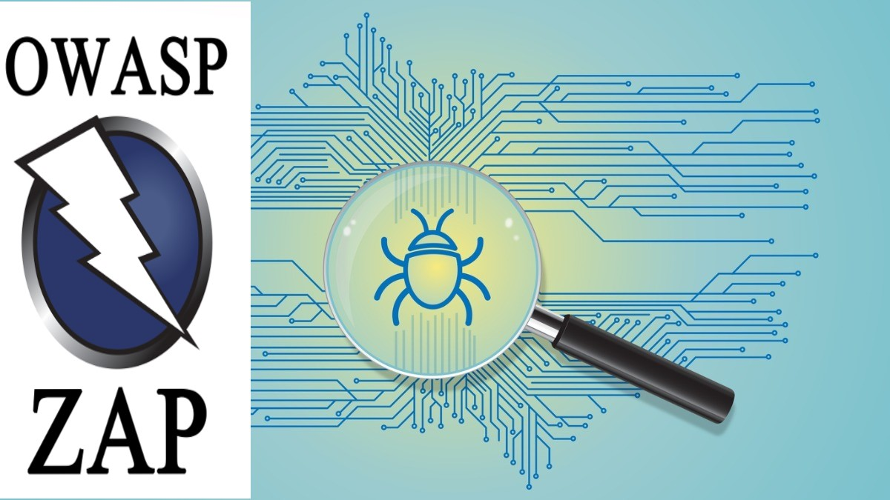

The first section of the malware analysis lab demonstrates how static analysis is performed by submitting an indicator of compromise(IOC) to a collection of antimalware programs and analyzing the returned result. The second section performs Dynamic analysis by dissecting the malware at the binary level.
This lab focuses on encrypting and decrypting files using CCrypt and OpenSSL in Kali Linux.

The web vulnerability scanning lab seeks to demonstrate how OWASP Zed Attack Proxy (ZAP) is installed and used to discover web application security vulnerabilities.

The labs demonstrate how Nmap is used to map out the network, discover open ports and services, and the operating systems of devices on the network.
This lab's primary focus is scanning the forked code repository with SNYK to discover vulnerabilities and attempt to fix them.

The primary focus of this lab was to capture traffic traversing the Windows 10 virtual machine interface card and review the captured traffic.
.
The lab focuses on using Cisco's Skills for all derivatives of Ubuntu Linux to generate private and public keys and use the private key to digitally sign a document.